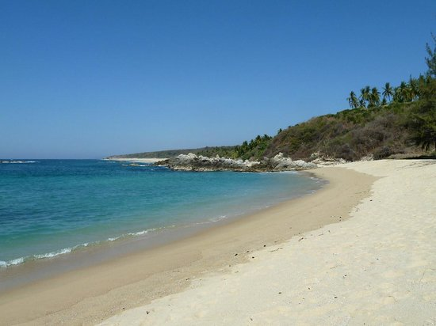

Playa Bacocho

Es una de las playas más largas de la zona. Se recomienda extremar precauciones ya que el oleaje suele ser peligroso por las corrientes que existen. Es ideal para tomar el sol y ver la puesta de sol. Existen algunas palapas con servicio de comida en temporada de vacaciones.
La playa es de gran longitud, dividida en tres secciones a través de rocas, que, en conjunto con la vegetación pionera, las palmeras y la vegetación de matorral espinoso de los alrededores, constituye un agradable ambiente natural. La anchura de la playa varía entre los 30 y 70 metros; la arena es fina y de color gris; la pendiente es suave y el agua es templada, de color azul verdoso y de oleaje moderado a fuerte.
Como complemento y para hacer más placentera su estancia, existen hoteles en este lugar que ofrecen su servicio de restaurante y bar a orilla de la playa con albercas y áreas verdes.
La Playa Bacocho está ubicada al poniente de la población a 4 kilómetros (2.49 millas), tomando la carretera costera con destino a Pinotepa Nacional, hasta llegar al fraccionamiento Bacocho, desvíese a la izquierda hasta llegar a la playa. También se puede llegar por mar.